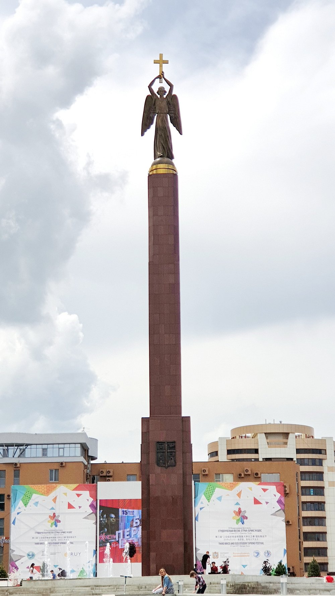

The Monument to the Red Guard Soldier stands on Krepostnaya Hill and is the city’s most recognizable symbol. It was erected in 1976 to commemorate the city’s liberation from the White Guards. Stavropol changed hands several times between the White Guards and the Red Guards, but the latter finally seized power in 1920. “Budyonovets”—as the monument is popularly known—is a sculpture of a soldier holding a rifle; the total height of the monument is seven and a half meters. The monument is popular among young people, as it is a common spot for friends to meet up and for romantic dates. It is also a frequent destination for school field trips and tours for visitors to the city. The observation deck on Krepostnaya Hill offers a beautiful view of the city’s Northwest District.

The monument was unveiled in 2002 to commemorate the 225th anniversary of Stavropol. It is located on Alexandrovskaya Square and is visible from all sides. In the initial design, the monument was called the “Monument to the Founding of Stavropol,” but in its final form, it is commonly referred to as the “Guardian Angel of the City of the Cross.” I do not know the names of the sculptors or architects behind this landmark. The 25-meter column, atop which stands a 7-meter bronze figure of an angel, is a hollow tube clad in red granite. The angel faces east and holds a cross in his hands. The area is crowded, especially in the evenings on weekends or holidays. There are many attractions nearby—a cascade of fountains with a pedestrian street, Alexander Square, and much more. We hope everyone has a pleasant time and makes wonderful memories.

As expected, Vladimir Ilyich stands prominently in front of the Stavropol Krai Administration building on the central square. To be honest, in any other city, I would most likely have been completely indifferent to this structure. Especially since it’s typical of the USSR and lacks any architectural flair. But here, it’s a different story! After all, this building used to house the regional committee of the Communist Party of the Soviet Union. And it was here that the man who turned our “stagnant” lives upside down at the turn of the 1980s and 1990s began his political career. M. S. Gorbachev. Nearly 55 years ago, in the summer of 1968, the future reformer and architect of “Perestroika” became second secretary of the Stavropol Regional Committee of the Communist Party of the Soviet Union, and nearly two years later was appointed its first secretary. Well, what followed was Moscow and a path upward through the ranks of the party and bureaucracy to the highest position at that time. Tourists visiting Stavropol, looking at the current building of the Regional Administration, surely think of Gorbachev. Well, even though the leader of the proletariat stands in front of this massive building. Tourists visiting Stavropol who look at the current regional administration building are sure to think of Gorbachev. Well, even though the leader of the proletariat stands in front of this massive building, objectively speaking, he takes a back seat.
.jpg)